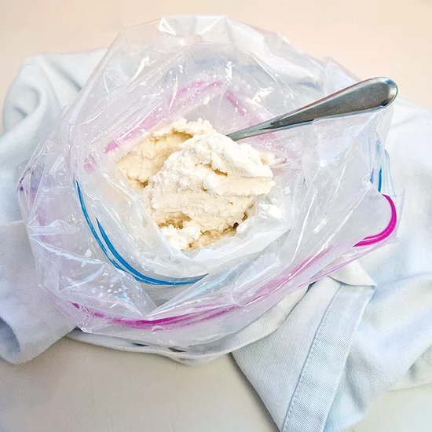

Vanilla Ice Cream

Description:
Homemade vanilla ice cream that can double as a fun
science project! Teach thermodynamics with a tasty result.
Ingredients:
- 1 tbs sugar
- 1/2 cup salt
- 1/2 cup half-and-half
- 1/4 tsp vanilla extract
- 4 cups ice cubes
Steps:
- In a small zip-lock bag, place the sugar, half-and-half, and vanilla extract. Seal the bag well.
- Add the ice cubes and salt to a large zip-lock bag.
- Put the small bag inside of the large bag. Ensure that both bags are sealed well.
- Wrap the bag in a small towel and shake it for five minutes. Check the small bag every couple of minutes for solidification.